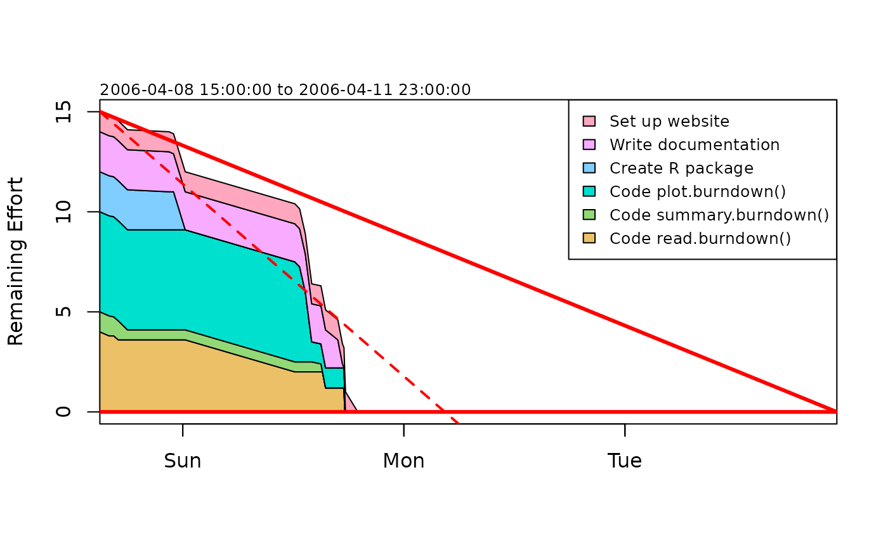
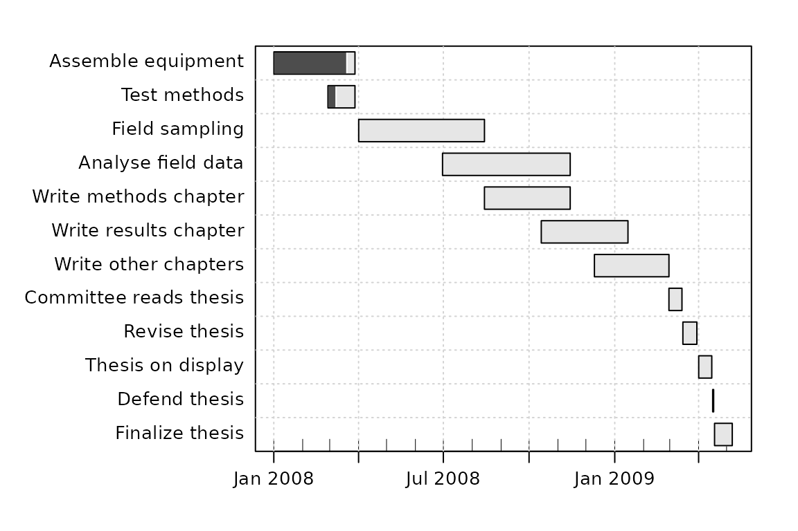
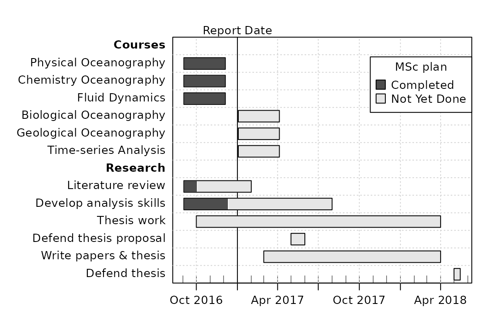

Abstract. The plan package provides functions for planning and describing projects and monitoring the progress towards completions of individual tasks within projects.
Introduction
This package provides (mainly graphical) tools for the planning of projects. This is an early version of the package, providing support for burn-down charts and Gantt diagrams.
Burn-down charts
Burndown charts1 are used to display a time series of the progress towards the goals of a project. The format is simple. The x axis represents time, ranging from the onset of the project to the deadline for completion. The y axis represents the remaining effort that is require to accomplish the work. As the work is carried out, the chart provides a running summary of progress towards the deadline. If work is proceeding smoothly according to schedule, the chart takes the form of a triangle, with the remaining effort falling from its initial value to zero at the deadline. For guidance, a gray line is drawn to indicate this ideal situation. If work is being accomplished faster than expected, the data will lie below this gray line. However, if the project is falling behind schedule, the data line will lie above the ideal line. Thus, a glance at the chart indicates whether the deadline can be met. In most cases, the work is divided into sub-tasks, and the remaining effort in each task is shown with a different colour in the chart. This is helpful in identifying tasks that may need more attention.
The following plots a sample burndown chart; replace the data() call with a read.burndown() call, to create a chart of your own.

Gantt charts
Gantt diagrams2 indicate a timetable for completion of the components of a project. The sample dataset gantt is a hypothetical research plan for an MSc project; you can see how it is graphed with example(plot.gantt), or by entering the following code.

Moving beyond this built-in dataset, note that there are 3 main ways to create gantt-class objects: (a) write information in a text file and use read.gantt(), (b) use as.gantt() to assemble the object in one (somewhat complicated) step, or (c) use new() to create an object and then ganttAddTask() to add tasks one by one. The third approach may be the easiest for beginners, so it is illustrated below, with a sketch of a typical oceanography MSc program. Note that a legend is added, along with an indication of the time at which the graph was prepared.
library("plan")
g <- new("gantt")
g <- ganttAddTask(g, "Courses") # no times, so a heading
g <- ganttAddTask(g, "Physical Oceanography", "2016-09-03", "2016-12-05", done=100)
g <- ganttAddTask(g, "Chemistry Oceanography", "2016-09-03", "2016-12-05", done=100)
g <- ganttAddTask(g, "Fluid Dynamics", "2016-09-03", "2016-12-05", done=100)
g <- ganttAddTask(g, "Biological Oceanography", "2017-01-03", "2017-04-05")
g <- ganttAddTask(g, "Geological Oceanography", "2017-01-03", "2017-04-05")
g <- ganttAddTask(g, "Time-series Analysis", "2017-01-03", "2017-04-05")
g <- ganttAddTask(g, "Research") # no times, so a heading
g <- ganttAddTask(g, "Literature review", "2016-09-03", "2017-02-01", done=20)
g <- ganttAddTask(g, "Develop analysis skills", "2016-09-03", "2017-08-01", done=30)
g <- ganttAddTask(g, "Thesis work", "2016-10-01", "2018-04-01")
g <- ganttAddTask(g, "Defend thesis proposal", "2017-05-01", "2017-06-01")
g <- ganttAddTask(g, "Write papers & thesis", "2017-03-01", "2018-04-01")
g <- ganttAddTask(g, "Defend thesis", "2018-05-01", "2018-05-15")
font <- ifelse(is.na(g[["start"]]), 2, 1)
plot(g, ylabel=list(font=font),
event.time="2017-01-01", event.label="Report Date")
par(lend="square") # default is round
legend("topright", pch=22, pt.cex=2, pt.bg=gray(c(0.3, 0.9)),
border="black", xpd=NA,
legend=c("Completed", "Not Yet Done"), title="MSc plan", bg="white")